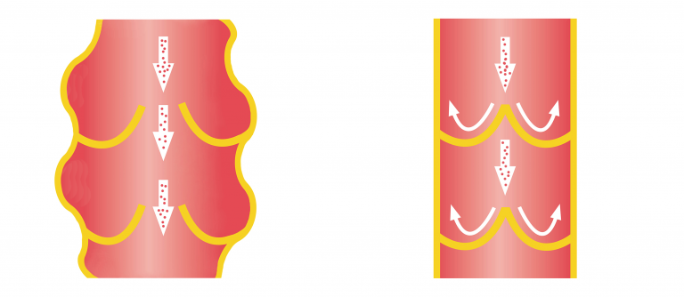

In 28 giorni, pulirete le vostre arterie e ripristinerete la normale circolazione - un effetto confermato da ricerche mediche indipendenti.
Ciao,
Sono il professor Per-Olaf Sandström, ricercatore specializzato in biologia molecolare. In questa pagina vorrei presentarvi il successo più importante della mia vita, per il quale ho già ricevuto una dozzina di premi prestigiosi,, tra cui il premio della World Atherosclerosis Society. Ho sviluppato un metodo che permette a chiunque di ripulire le proprie arterie dalle placche aterosclerotiche, dal colesterolo e dai depositi di tossine in modo naturale, sicuro ed economico, ripristinando così il normale flusso sanguigno e riducendo il rischio di infarto del 185% e di ictus del 168%. E tutto questo in 28 giorni!
Quindi, se volete, è possibile farlo:
-
eliminare il 99,7% delle placche aterosclerotiche, del colesterolo e dei depositi di tossine -
in 28 giorni;
-
ripristinare il 100% del flusso sanguigno arterioso naturale e ossigenare ogni cellula del corpo;
-
ridurre il rischio di infarto del 185% e di ictus del 168%;
-
eliminare una volta per tutte la sensazione di freddo ai piedi e alle mani e dimenticare il dolore allo sterno;
-
sbarazzarsi del 98,9% delle vene varicose antiestetiche e dolorose;
-
riacquistare la piena vitalità dei vostri 20-25 anni;
-
e grazie a questo godersi di nuovo la vita!
Non importa quanti anni hai o da quanto tempo soffri di problemi di circolazione. Non importa se il vostro problema è in una fase iniziale o se ha già conseguenze di vasta portata. Anche se il vostro medico vi dice che non ci sono possibilità di miglioramento... Sappi che in 28 giorni puoi ripristinare il 100% del flusso di sangue in ogni singola arteria. Senza bisturi, prodotti chimici nocivi e cambiamenti nello stile di vita!
Ecco perché il mio metodo è una buona alternativa ai modi tradizionali di trattare l'insufficienza cardiovascolare:
-
è formulato solo con principi attivi naturali - grazie a questo, non irrita lo stomaco né causa effetti collaterali;
-
non richiede una dieta o un aumento dell'attività fisica - se volete fare attività fisica o limitare certi cibi, potete ovviamente farlo - ma non è assolutamente necessario;
-
consente di risparmiare migliaia di euro - invece di spenderli in pillole piene di sostanze chimiche o farmaci inefficaci.
Ho sviluppato un metodo naturale che pulisce le arterie dalle placche aterosclerotiche, dal colesterolo e dalle tossine e le ripristina al 100% della loro capacità naturale.
Grazie ad esso - si previene la possibilità di infarto e ictus, e proteggere le vene da aterosclerosi ... Dimenticherete tutti i problemi che vi preoccupano a causa della cattiva circolazione. Smetterete di stancarvi durante le attività più semplici, e vi sbarazzerete della mancanza di respiro.
Finalmente vi sentirete veramente in forma!
Le passeggiate più lunghe non saranno più un problema, ma un piacere. Vi sbarazzerete dei dolori lancinanti al petto, dimenticherete i crampi costanti e l'intorpidimento dei piedi e delle mani. Tutto grazie al fatto che ho potuto sviluppare una formula che dissolve il 99,7% delle placche aterosclerotiche, dei depositi di colesterolo e delle tossine che rendono impossibile la normale circolazione del sangue. Questo ripristina il 100% del flusso sanguigno naturale delle vene e permette ad ogni cellula del corpo di essere nutrita. L'effetto è che il rischio di infarto è ridotto del 185% e l'ictus del 168%, mentre il mio metodo protegge le vene dall'aterosclerosi. E tutto questo in soli 28 giorni! Come ho fatto?
Volevo liberare mia moglie dalla paura di un attacco di cuore.
Secondo recenti indagini, una persona su cinque in Svezia soffre di qualche forma di insufficienza circolatoria. Queste persone di solito non sanno che nel loro corpo c'è una bomba a orologeria che potrebbe esplodere in qualsiasi momento. Ignorano la fatica, il dolore e l'affanno - pensano che sia normale, viene con l'età. Tuttavia, i problemi circolatori sono in realtà una condizione seria che, se ignorata, può avere conseguenze tragiche (infarto, ictus, aterosclerosi cronica degli arti inferiori). Un attacco di cuore è un serio segnale d'allarme. Di regola, solo il 50% delle persone affette sopravvive. Purtroppo questo è successo anche a mia moglie Daniella, una donna di 48 anni che non fuma, non beve e mangia sano! All'inizio si lamentava solo dei crampi ai polpacci e dei piedi freddi. A volte aveva il fiato corto. "Niente di che", ho pensato. Ma poi è solo peggiorato...
Dani era sempre attiva. Ridevamo che era molto stanca di non fare niente. Ci piaceva andare in bicicletta insieme, correre o semplicemente camminare nei boschi ... Con il passare del tempo, mia moglie ha iniziato a stancarsi più velocemente e ogni pochi passi doveva fermarsi per riprendere fiato. Infine, ha fatto degli esami che hanno mostrato una grave aterosclerosi delle arterie coronarie. Il medico le ha prescritto molte pillole e le ha consigliato di non fare sforzi. Le moto hanno cominciato a prendere polvere in garage e ho smesso di riconoscere mia moglie. Stare seduta in un posto la stancava terribilmente e si era completamente abbandonata. Mi dispiace, ma ho avuto l'impressione che stesse mollando sempre di più ogni giorno...
Era pericoloso per la sua vita!
Ma il peggio è arrivato il giorno del suo cinquantesimo compleanno. Quando ho aperto la porta, tenendo la torta in una mano e i fiori nell'altra, ho percepito che qualcosa non andava. Il silenzio assoluto nella casa era rotto solo dal cane. Sono corso in cucina, e lì giaceva Daniella, tenendo il mano al cuore. Si è scoperto che aveva avuto un infarto. È stato il dito di Dio, perché se fossi entrato qualche minuto dopo... Probabilmente non avrei trovato mia moglie viva.
Non potevo crederci. Per tutta la vita ho creduto che uno stile di vita sano, una dieta corretta e l'esercizio fisico avrebbero protetto me e i miei cari dai problemi circolatori. Questo attacco di cuore era qualcosa che era impossibile da credere. Quanto mi sbagliavo... Sapevo che non avevo più tempo. Solo il 50% delle persone sopravvive a un secondo attacco di cuore, solo il 3% sopravvive a un terzo.
Come ho inventato l'"antidoto ai problemi circolatori"?
Dovevo aiutare mia moglie a sbarazzarsi della sua aterosclerosi e quindi a preservarla dalla morte imminente. Volevo che smettesse di vivere nella paura costante e che fosse finalmente in grado di tornare al suo vecchio sé. Poi ho pensato tra me e me: "Sei un ricercatore! Hai la biologia e la chimica a portata di mano. Hai già sviluppato molti rimedi per vari disturbi. Inventati qualcosa per i problemi circolatori!". E poi ho iniziato a cercare una soluzione al problema ...
Nel corso di un anno, ho condotto un'intensa ricerca di laboratorio. Ho testato diverse miscele di principi attivi su mia moglie. Sottolineo che erano tutti naturali al 100% e sicuri per il corpo. Le conoscenze scientifiche e un po' di fortuna mi hanno permesso di muovermi rapidamente - ho sviluppato una formula cardiovascolare unica. L'ho immediatamente segnalato alle autorità mediche. La sua efficacia è stata confermata al 98% dai maggiori centri di ricerca in Europa e negli Stati Uniti! Già durante i test, la mia formula ha curato naturalmente centinaia di volontari da problemi circolatori.
Mia moglie, dopo la prima settimana di utilizzo di questa formula, non era più stanca tutto il tempo e i suoi crampi alle caviglie erano alleviati. Era contenta di non dover più indossare tre paia di calzini caldi a letto perché i suoi piedi non erano più freddi. E questo era solo l'inizio. La settimana successiva si sentiva sempre più energica e non riusciva più a sdraiarsi. Un giorno, quando non l'ho trovata a casa, ho avuto paura. Ho controllato il garage - la bici non c'era! Di ritorno dal suo "lungo viaggio", ha detto, felice: "Per-Olov, mi sento rinata. Come se queste difficoltà con l'aterosclerosi fossero un sogno. Hai inventato un antidoto ai problemi circolatori. Pensa a quante persone potrebbe aiutare! Grazie mille. "

Dani si è liberata dell'arteriosclerosi, riacquistando così la sua energia e il suo interesse per la vita.
Grazie alla mia formula cardiovascolare, puoi non solo sbarazzarti completamente dei problemi di circolazione, ma anche evitare che si ripetano in futuro.
Lasciatemi spiegare brevemente da dove vengono i problemi di circolazione. Il processo è molto complicato, ma cercherò di spiegarlo in un linguaggio comprensibile.
Le arterie sono come dei canali attraverso i quali il sangue fornisce importanti nutrienti a tutte le cellule del tuo corpo.
Quando questi canali sono bloccati, le "parti del corpo" sono tagliate fuori dall'energia e dai nutrienti e letteralmente muoiono.
Questo accade quando vari fattori causano il blocco o il danneggiamento delle vene. Come avviene questo? Anche una piccola lesione sulla parete di una vena può trasformarsi in un coagulo di sangue - cioè una placca aterosclerotica. Col tempo, la placca diventa più grande e il colesterolo si aggiunge al quadro. Questa è una specie di colla che cerca di guarire l'infiammazione nel nostro corpo e tutta la microviscosità. Ma invece ostruisce ancora di più le vene. Di conseguenza, il sangue scorre sempre più debolmente e smette di fornire a tutti gli organi ossigeno e nutrienti vitali. L'intero sistema diventa instabile. Ma il peggio è che le placche aterosclerotiche che coprono le pareti delle vene sono come una bomba a orologeria! Se una vena è bloccata al 100%, provoca un infarto. Se un grosso coagulo composto da colesterolo si separa (ad esempio a causa dello stress), può raggiungere il cervello e causare un ictus.
Così ho avuto la sfida di creare una formula che avrebbe avuto un effetto radicale: avrebbe pulito le vene, rigenerato e rafforzato le loro pareti e protetto da ulteriori danni in futuro. Ho raggiunto questo obiettivo! Ho sviluppato una potente formula cardiovascolare detergente e rigenerante. L'ho chiamato Cardiofort.
Perché la mia formula cardiovascolare è stata salutata come un "antidoto miracoloso ai problemi circolatori"?
HA PIÙ DEL 98% DI EFFICACIA NEL PULIRE E RIGENERARE I VASI SANGUIGNI

Arterie intasate e danneggiate che impediscono il normale flusso sanguigno
Arterie ripulite e rigenerate - corretto flusso di sangue in tutto il corpo
Fino ad ora, sembrava un miracolo. Ma è un fatto, che è confermato dal caso di mia moglie e di altre 14000 persone che hanno già eliminato i problemi circolatori grazie al mio metodo. Inoltre, l'efficacia di questa formula è stata provata al di là di ogni dubbio dal centro di ricerca britannico di Liverpool. Questa è una scoperta mondiale riconosciuta da eminenti cardiologi.
SICURO AL 100% E FACILE DA USARE

Gli ingredienti naturali fanno miracoli - l'umanità ha accumulato abbastanza conoscenze scientifiche per creare la formula perfetta! Questo è il motto a cui ho aderito nel creare la formula che pulisce le arterie. Il farmaco contiene solo ingredienti naturali, sicuri e altamente efficaci. Li ho fatti sotto forma di gocce facili da prendere, in modo che tutti possano realizzare il trattamento a casa propria senza problemi. È sufficiente prendere 60 gocce due volte al giorno per sbarazzarsi dei problemi di circolazione una volta per tutte in 28 giorni. Nessun effetto collaterale e nessuna distruzione del sistema digestivo.
19 persone hanno acquistato oggi
Tornerete in forma, dimenticherete il dolore e sarete orgogliosi della vostra energia e forza!

MIGLIAIA DI EURO DI RISPARMIO

Come si può perdere l'occasione di sbarazzarsi dei problemi di circolazione?
Si può ancora soffrire di crampi, vene varicose e sensazioni di freddo alle gambe e alle braccia. Si può continuare a tollerare la mancanza di respiro, la fatica costante e i dolori al petto e ignorare i rischi associati... Ma perché, quando ti garantisco un modo naturale, semplice e conveniente per eliminare i problemi circolatori una volta per tutte, non provi a curarti? Bastano 28 giorni di trattamento per farvi diventare uno dei 14.000 utenti soddisfatti di Cardiofort che hanno già dimenticato la fatica, l'affanno e le vene varicose e hanno riacquistato il 100% della loro condizione precedente.
Non si rischia nulla!
Con Cardiofort, libererete le vostre arterie entro 28 giorni. Inoltre, non si rischia nulla! Come soluzione di successo a problemi di livello mondiale, la mia formula ha ricevuto la prestigiosa Tripla Garanzia di Soddisfazione: originalità, qualità e cura completa.
Tripla garanzia di soddisfazione
-
La garanzia di originalità è nella formula che aiuta la circolazione cardiovascolare. Cardiofort contiene una formula basata sulle sostanze più forti che puliscono le vene e rafforzano le loro pareti. La sua efficacia nell'eliminare le placche aterosclerotiche è stata confermata da studi clinici. È l'unica formula così innovativa. Così si può essere sicuri che si sta ottenendo il prodotto originale, che è disponibile solo su questa pagina.
-
Garanzia di qualità - Grazie all'avanzato processo di produzione, Cardiofort soddisfa i più alti standard di qualità. A seconda della tua salute e del tuo benessere, la concentrazione dei principi attivi è selezionata in modo che il trattamento sia completamente sicuro. Tutto è fatto per garantire che i suoi effetti siano al 100% in linea con le vostre aspettative.
-
Efficacia garantita - numerosi test di laboratorio e di consumo confermano la massima efficacia di Cardiofort. Sulla base di questi risultati, il farmaco è stato riconosciuto dagli specialisti di tutto il mondo che lo raccomandano a tutti coloro che si rivolgono a loro per aiuto. Sono fiduciosi che in 28 giorni si libereranno le vene e successivamente si bloccherà la comparsa di placche aterosclerotiche.
Liberate le vostre arterie in 28 giorni con Cardiofort in modo naturale, semplice e conveniente.
Le grandi compagnie farmaceutiche degli Stati Uniti e del Giappone stanno letteralmente lottando per un brevetto sulla mia formula Cardiofort. Quando venderò il brevetto, il trattamento sarà disponibile in tutto il mondo, ma sarà molto costoso.
Prima che questo accada, ho deciso di renderlo disponibile in Europa per un abbonamento al club di sconto - il 50% di sconto lo rende più economico. Tutto questo per aiutare a ristabilire la circolazione normale al maggior numero possibile di persone, non solo nel mio paese ma in tutta Europa.
Vi incoraggio quindi ad approfittare di questa opportunità!
Ordinare dal Discount Club è facile. Non è necessario inviare denaro online o pagare con carta di credito per ricevere Cardiofort.
Basta compilare il modulo in 2 minuti e in un paio di giorni riceverai un pacco, che viene comodamente pagato al corriere.
Grazie per aver trovato il tempo di leggere il mio messaggio. Le auguro una grande gioia nella sua nuova vita, libera da problemi circolatori e dalla paura di infarto, ictus e aterosclerosi. In 28 giorni dimenticherete di esservi mai preoccupati di questo problema!